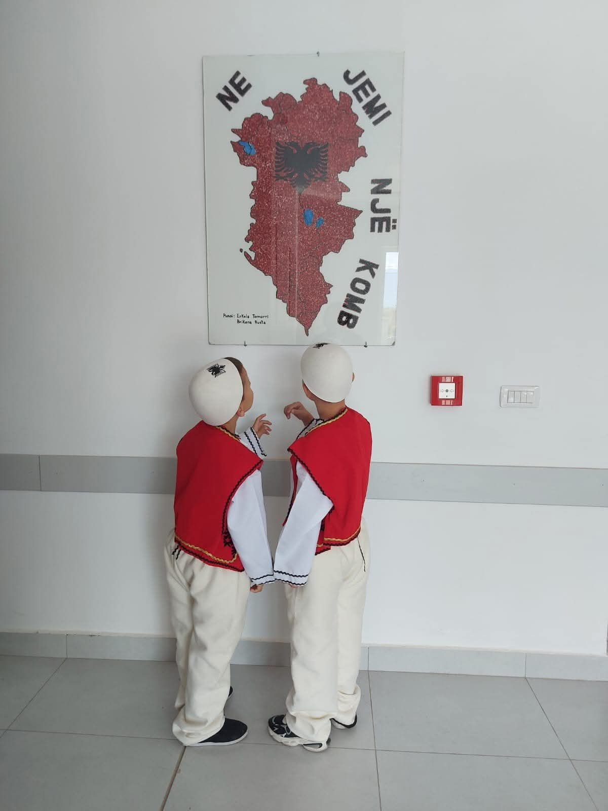
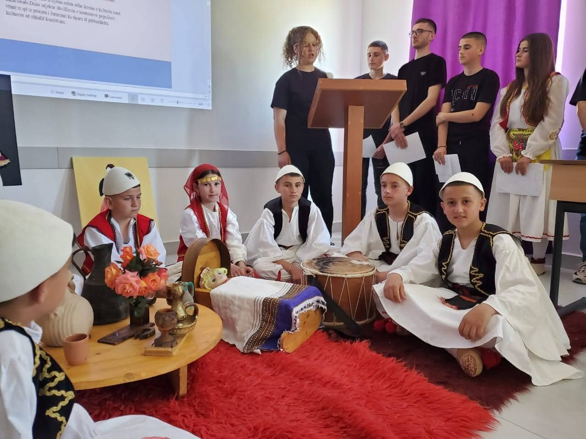
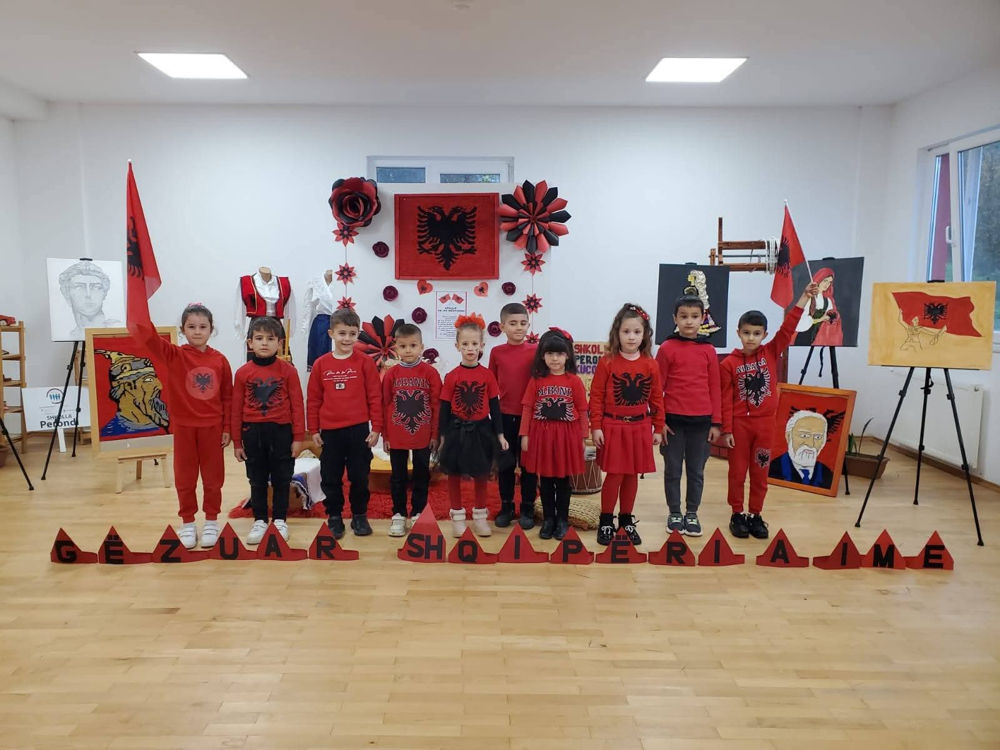

Shkolla "Llazar Kuli"
Shkolla “Llazar Kuli” është një institucion arsimor i vendosur në fshatin Perondi, Bashkia Kuçovë, i cili ofron arsimin e mesëm për nxënësit e zonës. Kjo shkollë ka një histori të pasur dhe një angazhim të fortë për zhvillimin e mësimit dhe arsimimin e brezave të rinj. Shkolla u rindërtua dhe rikonstruktua me kushte moderne për vitin shkollor 2024–2025, duke ofruar ambiente më të sigurta dhe më të përshtatshme për nxënësit dhe stafin. Me hapjen e dyerve të saj në këtë vit shkollor, shkolla ka mundësuar që nxënësit të kenë klasa të ndriçuara, të pastra dhe një ambient të përshtatshëm për mësim.
Shkolla “Llazar Kuli” është emëruar për të nderuar një figurë të shquar lokale, Llazar Kulin, i cili ishte një dëshmor që kontribuoi në zhvillimin e komunitetit. Ky emër është dhënë për të ruajtur kujtimin dhe respektin për ata që kanë dhënë jetën dhe mundin e tyre për atdhenë dhe për komunitetin. Shkolla synon që, përmes mësimit dhe arsimimit të brezave të rinj, të vazhdojë traditën e këtij kontributi dhe të formojë qytetarë të përgjegjshëm.



Me shume...